01 / PERSONAL ISLAND STACK
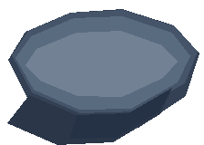
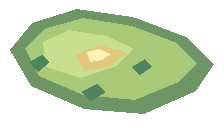
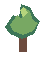
절벽 바닥 → 섬 표면 → 전용 건물 → 주변 소품 순서로 쌓인다.
DESIGN ASSET BREAKDOWN / 01
최종 플레이 화면은 독립적인 픽셀 에셋을 데이터와 레이어 순서로 조합해서 만든다. 이 보드는 그 구조를 눈으로 확인하는 용도다.



절벽 바닥 → 섬 표면 → 전용 건물 → 주변 소품 순서로 쌓인다.
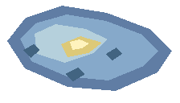
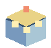
섬 종류가 바뀌면 표면 팔레트와 대표 건물만 교체된다.
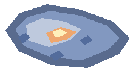
ISLAND TOP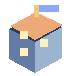
BUILDING PROP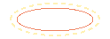
SELECTION UI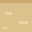
2D PATH TILE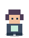
PLAYER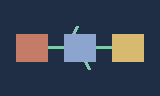
EXHIBIT / SYSTEM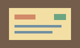
EXHIBIT / EVIDENCEFINAL SCREEN = ASSET PARTS + DATA POSITION + INTERACTION STATE → 실제 플레이 화면은 메인 페이지에서 확인